Sakai News
Social Buzz
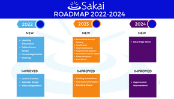
WHERE IS SAKAI GOING FROM 2022-2024?
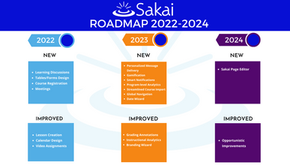
Where is Sakai going from 2022 to 2024?
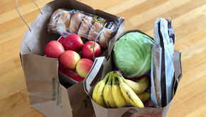
Sakai Facilitates Food Bank Leadership Program During Pandemic
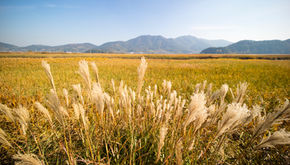
Sakai Facilitates Food Bank Leadership Program During COVID-19 Pandemic
#SakaiCon 2020 Wins Kudos for #Accessibility
#SakaiCon2020 gets kudos for accessibility
Alternative Assessment in Sakai: Part 3 - Portfolios and Peer Review
Alternative Assessment in Sakai: Part 2 - Games and Interactive Activities
Sakai Expands Beyond the Academy
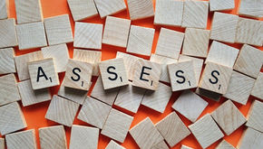
Alternative Assessment Strategies in Sakai: Part 1
Sakai elevates teaching at Universidad Publica de Navarro
Sakai Powers Back-to-Campus Orientation at University of Notre Dame
Walsh University Wins Award For Use Of Sakai In All-Remote Learning During Pandemic
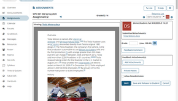
Sakai 20.0 is now available!
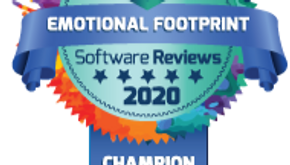
Sakai ranked Number One In customer experience among LMS competitors
Dealing with COVID: 11 Tips for Sakai Admins During the Massive Move to Online
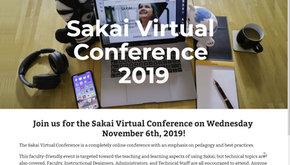
Online Conferences in the time of COVID: 5 Tips for Success
Sakai enables Duke University’s coronavirus response
Pepperdine faculty testimonials for Sakai
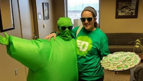
Sakai aids sexual violence prevention
Sakai Rubrics: How the Cookie Crumbles
Sakai used to create award-winning course in spoken French
Sakai Used for National Certification Exam
Reuse, Reduce, Repurpose: How Sakai makes the most of the best code
Hosei University in Japan commits to Sakai LMS until 2025
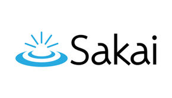
Sakai for 2019 is here!
The True Value of Open Source Software in Higher Education
Peer Review Improves Student Coursework
Where’s Sakai Going in the Next Three Years?
Better Grading Solution: How Faculty Requested and Received a Better Tool
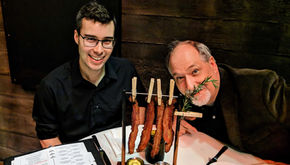
Sakai Campfire Stories: Dining and Other Adventures
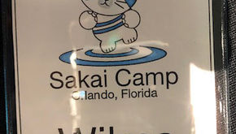
Sakai Campfire Stories: Location, Location, Location
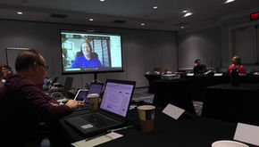
Sakai Campfire Stories: WHOO attended Camp this year?
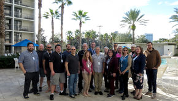